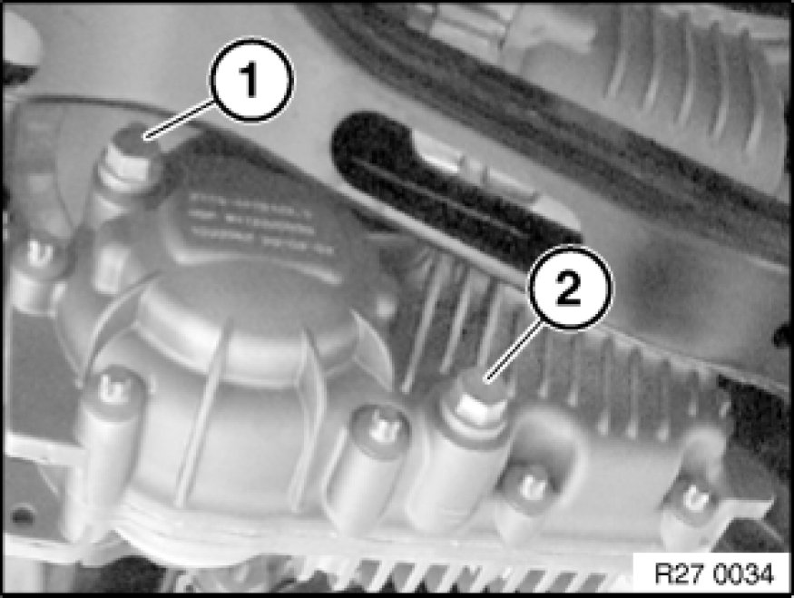

Topping Up/Changing Transfer Case Oil
27 00 ... - Topping up/changing transfer case oil

Important!
Use only the approved gear oil in the transfer box.
Failure to comply with this requirement will result in serious damage to the transfer box!
Note:
Only change the oil when the transfer box is at normal operating temperature.

Checking/correcting transfer case oil level:
Undo oil filler plug (1).
Check transfer case oil level.
If necessary, pour in gear oil up to lower edge of opening for oil filler plug (1).
Installation Note:
Tightening torque 27 00 11AZ [1][2]Mechanical Specifications.
Replace sealing ring.
Changing transfer case oil:
Place oil collecting apparatus underneath.
Remove oil drain plug (2).
Drain and dispose of gear oil.
Note: Observe country-specific waste-disposal regulations
Replace sealing ring, screw in oil drain plug (2) and tighten down.
Tightening torque 27 00 11AZ [1][2]Mechanical Specifications.
Undo oil filler plug (1).
Pour in gear oil up to lower edge of opening for oil filler plug (1).
Tightening torque 27 00 11AZ [1][2]Mechanical Specifications.
Replace sealing ring.